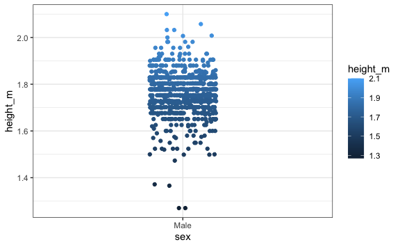
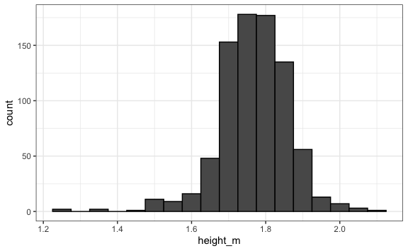
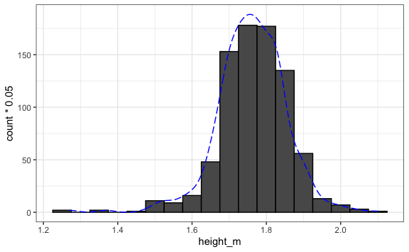
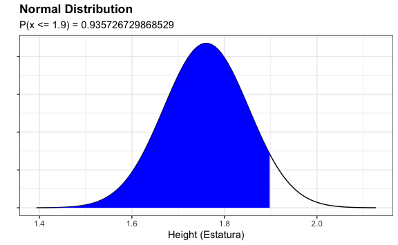
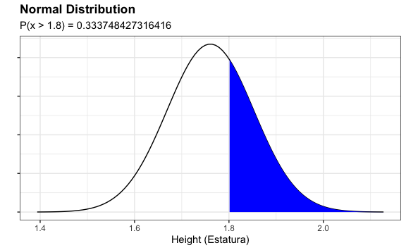
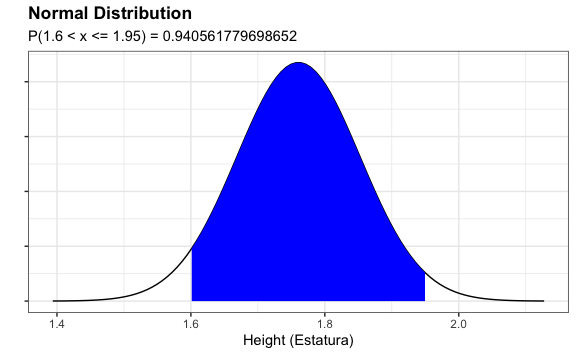
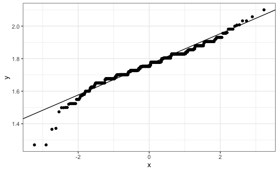
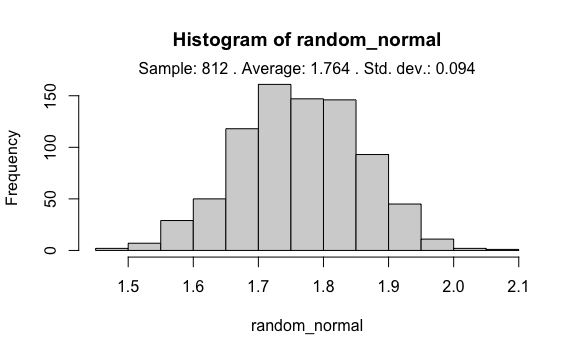
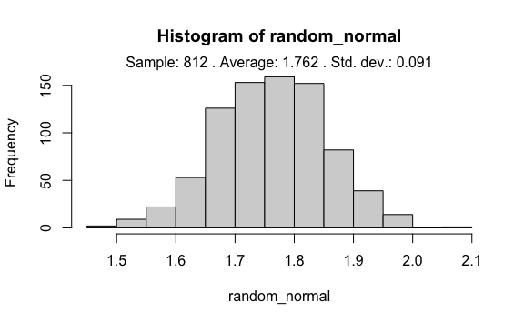

Chapter 8 Continuous Probabilities
Recall that a continuous variable is a variable that takes values along a continuum, that is, over an entire interval of values. An essential attribute of a continuous variable is that, unlike a discrete variable, it can never be measured exactly; the observed value depends largely on the precision of the measuring instruments. With a continuous variable, there is inevitably a measurement error. As an example, the height of a person (1.72m, 1.719m, 1.7186m….). Another example could be the time it takes an athlete to run 100 meters flat, since this time can take values such as 9.623 seconds; 10.456485 seconds; 12.456412 seconds; that is, an interval of values.
For example, recall that in the heights data frame we have the heights of a group of university students.
heights |>
filter(sex == "Male") |> # Filter only males
mutate(height_m = height/39.37) |> # Convert to centimeters
ggplot() +
aes(sex, height_m, color = height_m) +
geom_point(position = position_jitterdodge())
When graphing the data distribution, we intuitively realize that it does not make sense to calculate the proportion of people who measure exactly 1.73m because it would also serve us if a person measures 1.731, 1.729, or any close value that is not exactly 1.73, whether due to how it was measured or any other type of error.
It makes more sense to analyze the data by intervals, as can be seen in this histogram that groups by intervals of 0.05 meters = 5 cm.
heights |>
filter(sex == "Male") |> # Filter only males
mutate(height_m = height/39.37) |> # Convert to centimeters
ggplot() +
aes(height_m) +
geom_histogram(binwidth = 0.05, color = "black")
It is much more practical to define a function that operates on intervals instead of unique values. For this we use the Cumulative Distribution Function (CDF).
8.1 Empirical Distribution
When we use data to analyze its distribution, we speak of an empirical distribution. It is the actual distribution of a subject or an option, and measures the real and individual possibilities, regarding the measurement of the subject’s direct score, or of an option of which the frequency of occurrence has been measured.
For example, for our case we can create the vector men (men) made up of all the values of the heights of men:
Then, we can create the function FDA (CDF) that takes x as a variable and calculates the proportion of men who measure less than or equal to x within the data found in the men vector.
Thus, if we want to calculate what the proportion of students who measure 1.73m or less would be.
On the other hand, recall that the median is the value that divides our data into two equal parts. So, if we calculate the median:
And then we enter the value 1.7526035 into our function to ask what is the proportion of students who measure 1.7526035 or less, we should get a value very close to 50% by definition of the median.
So far we have calculated proportions with the cumulative distribution function FDA. However, if we want to know what is the probability that when choosing a man at random he measures 1.9m or less, we could use the same FDA. Since each student has the same chance of being chosen, the answer to the question would be the proportion of students who measure 1.9 or less.
\(F(1.9) = P(x \le 1.9)\)
We observe that the probability is approximately 93.97%.
If we now want to calculate the probability that someone chosen at random is taller than 1.80m, we first calculate the FDA for 1.8 and then obtain the complement.
\(P(x > 1.8) = 1 - P(x \le 1.8)\)
# Probability of measuring 1.80m or less
prob <- FDA(1.8)
# Probability of measuring more than 1.80m
1 - prob
#> [1] 0.3583744The probability is approximately 35.8%.
If we now wanted to know the probability that when choosing someone at random they measure more than 1.6m, but not more than 1.95m, we would have.
\(P(x > 1.6\ \cap\ x \le 1.95) = P(x \le 1.95) - P(x \le 1.6)\)
8.2 Theoretical Distribution
On the other hand, a theoretical distribution is a distribution that is derived from certain principles or assumptions by logical and mathematical reasoning, as opposed to one derived from real-world data obtained by empirical research. Among them we have the normal distribution, the binomial distribution, and the Poisson distribution.
For example, if we draw an approximate line of our data on men’s heights we would have this graph:
heights |>
filter(sex == "Male") |>
mutate(height_m = height/39.37) |>
ggplot() +
aes(height_m) +
geom_histogram(binwidth = 0.05, color = "black") +
geom_density(aes(y = ..count..*0.05), colour = "blue", lty = 5)
We see that the distribution has an approximately symmetric, bell shape. This distribution could be modeled using a normal distribution (also called Gaussian distribution, Gauss curve, or Gauss bell). To do this, in R we will use the function pnorm(x, average, std_dev) to estimate the probability but using a normal distribution function with an average promedio and a standard deviation desv_est. In this way, we can estimate what is the probability that if we choose a value at random it is less than or equal to x.
For example, let’s calculate again the probability that when choosing a man at random he measures 1.65m or less, we could use the same FDA and now the pnorm() function.
# Using the empirical distribution (real data):
FDA(1.9)
#> [1] 0.9396552
# Using the theoretical normal distribution (approx. data):
avg <- mean(men)
std_dev <- sd(men)
probability <- pnorm(1.9, avg, std_dev)
probability
#> [1] 0.9357267We obtain approximately the same results. Using a normal distribution facilitates our work when our data has a normal behavior.
Mathematically we are calculating the area under the curve which is seen in blue:
sec <- seq(-4, 4, length = 100) * std_dev + avg
normal <- dnorm(sec, avg, std_dev)
data.frame(value = normal) |>
ggplot() +
aes(sec, value) +
geom_line() +
theme(axis.text.y = element_blank()) +
xlab("Height (Estatura)") +
ylab("") +
ggtitle("Normal Distribution") +
geom_area(aes(x = ifelse(sec < 1.9, sec, 0)), fill = "blue") +
xlim(min(sec), max(sec)) +
labs(subtitle = paste("P(x <= 1.9) =", probability))
In the same way, we could estimate the probability that a person chosen at random measures more than 1.8m.
# Using the empirical distribution (real data):
1- FDA(1.8)
#> [1] 0.3583744
# Using the theoretical normal distribution (approx. data):
avg <- mean(men)
std_dev <- sd(men)
probability <- 1- pnorm(1.8, avg, std_dev)
probability
#> [1] 0.3337484Mathematically we are calculating the area under the curve which is seen in blue:
sec <- seq(-4, 4, length = 100) * std_dev + avg
normal <- dnorm(sec, avg, std_dev)
data.frame(value = normal) |>
ggplot() +
aes(sec, value) +
geom_line() +
theme(axis.text.y = element_blank()) +
xlab("Height (Estatura)") +
ylab("") +
ggtitle("Normal Distribution") +
geom_area(aes(x = ifelse(sec > 1.8, sec, 0)), fill = "blue") +
xlim(min(sec), max(sec)) +
labs(subtitle = paste("P(x > 1.8) =", probability))
Finally, let’s recalculate the probability that when choosing someone at random they measure more than 1.6m, but not more than 1.95m, we would have.
# Using the empirical distribution (real data):
prob_1 <- FDA(1.95)
prob_2 <- FDA(1.6)
prob_1 - prob_2
#> [1] 0.9445813
# Using the theoretical normal distribution (approx. data):
avg <- mean(men)
std_dev <- sd(men)
probability <- pnorm(1.95, avg, std_dev) - pnorm(1.6, avg, std_dev)
probability
#> [1] 0.9405618Mathematically we are calculating the area under the curve which is seen in blue:
sec <- seq(-4, 4, length = 100) * std_dev + avg
normal <- dnorm(sec, avg, std_dev)
data.frame(value = normal) |>
ggplot() +
aes(sec, value) +
geom_line() +
theme(axis.text.y = element_blank()) +
xlab("Height (Estatura)") +
ylab("") +
ggtitle("Normal Distribution") +
geom_area(aes(x = ifelse(sec > 1.6 & sec <= 1.95, sec, 0)), fill = "blue") +
xlim(min(sec), max(sec)) +
labs(subtitle = paste("P(1.6 < x <= 1.95) =", probability))
We can plot a Q-Q plot, which is a scatter plot created by plotting two sets of quantiles against each other. The function stat_qq(x) creates a normal Q-Q plot. This function plots the data in sorted order against the quantiles of a standard Normal distribution. The function stat_qq_line() adds a reference line. Although understanding this requires advanced statistics, we can interpret it that if when using this function the correlation is very close to the line then our data is very likely to follow a normal distribution.
heights |>
filter(sex == "Male") |>
mutate(height_m = height/39.37) |>
ggplot() +
aes(sample = height_m) +
stat_qq() +
stat_qq_line()
The points seem to fall on a straight line. This gives us a good indication that assuming our height data comes from a population that is normally distributed is reasonable. Observe that the y-axis plots the empirical quantiles and x-axis plots the theoretical quantiles. The latter are the quantiles of the standard Normal distribution with mean 0 and standard deviation 1.
Visual inspection is not always reliable. It is possible to use a significance test that compares the sample distribution with a normal one to determine whether or not the data shows a serious deviation from normality. The most used test for these tests is the Shapiro-Wilk normality test.
For this we will use the function shapiro.test(), which performs a normality test and gives us a p-value^(https://www.investopedia.com/terms/p/p-value.asp). It is based on the correlation between the data and the corresponding normal scores. If the p-value > 0.05 then the data distribution is not significantly different from the normal distribution. In other words, we can assume normality.
shapiro.test(men)
#>
#> Shapiro-Wilk normality test
#>
#> data: men
#> W = 0.96374, p-value = 2.623e-13The p-value is less than 0.05 so, although our distribution resembles a normal one, it does not pass the significance test.
8.3 Exercises
For the following exercises assume that the distribution of ages of students in the Data Science with R course approximates a normal distribution with an average of 24 years and a standard deviation of 3. If we select a student at random:
- What is the probability that they are at most 23 years old?
- What is the probability that they are older than 28 years?
- What is the probability that they are older than 22, but at most 27 years old?
- What is the probability that they are at most one standard deviation away from the average?
8.4 Monte Carlo Simulation for Continuous Variables
Although we have used a normal function to calculate the approximate probability, we can create more than one normal function with that average and that standard deviation. We will use the function rnorm(n, average, std_dev) to create a vector of n random data, such that they are normally distributed with an average avg and a standard deviation std_dev.
Recall that our original data has the following characteristics:
avg <- mean(men)
avg
#> [1] 1.760598
std_dev <- sd(men)
std_dev
#> [1] 0.09172018
length_val <- length(men)
length_val
#> [1] 812If we want to generate a random normal distribution we will use rnorm():
# Creation of the normally distributed random vector:
random_normal <- rnorm(length_val, avg, std_dev)
# We create a histogram to visualize it better
hist(random_normal)
result <- paste("Sample:", length_val, ". Average:",
round(mean(random_normal), 3), ". Std. dev.:",
round(sd(random_normal), 3)
)
mtext(result,3)
We can execute the code again to verify that it generates another distribution for us:
# Creation of the normally distributed random vector:
random_normal <- rnorm(length_val, avg, std_dev)
# We create a histogram to visualize it better
hist(random_normal)
result <- paste("Sample:", length_val, ". Average:",
round(mean(random_normal), 3), ". Std. dev.:",
round(sd(random_normal), 3)
)
mtext(result,3)
We can repeat this experiment of obtaining n random data that have approximately the same average and the same std_dev about 10 thousand times to calculate the proportion of times that a man measures more than 1.8m.
n_times <- 10000
simulation_results <- replicate(n_times, {
random_normal <- rnorm(length_val, avg, std_dev)
random_normal > 1.8
})
mean(simulation_results)
#> [1] 0.3339383Thus, we have obtained practically the same value that we achieved in the previous section, but this time estimating using the Monte Carlo simulation.
8.5 Exercises
The distribution of the admission exam grades of the Univ. UNISM is distributed approximately normally. The average is 14.5 and the standard deviation is 1. We want to know the distribution of the first place. It is known that 5 thousand people apply once a year per exam and take a single exam.
- Generate 5 thousand grades about 1,000 times using Monte Carlo simulation and perform a histogram of the result.
Solution
- Modify the previous simulation to analyze the distribution of the average grades of each year.
Solution
- Using the first Monte Carlo simulation created, calculate the probability that the first place in grades is greater than 18.5.